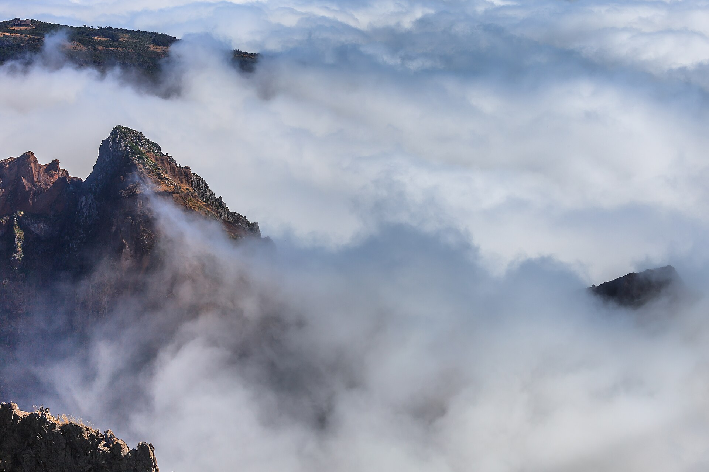
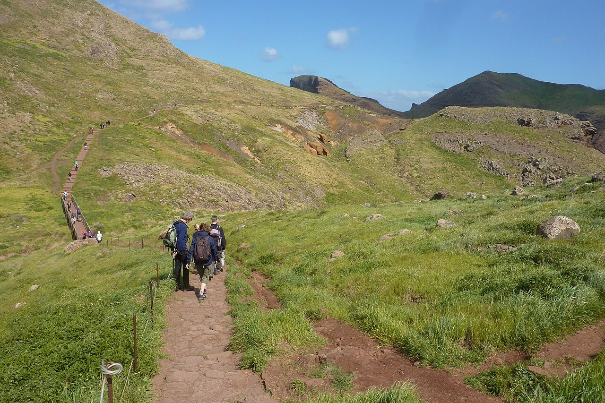
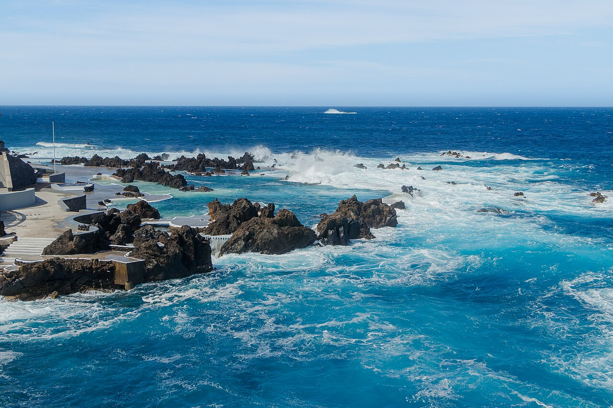

Panel operacyjny zastępuje wcześniejszą, prezentacyjną wersję planu. Priorytetem są: realny kalendarz, twarde bramki GO/NO-GO, sensowne backupy i jednoznaczne rozróżnienie między faktem, założeniem i rzeczą do sprawdzenia.



Oparte na źródłach oficjalnych lub operatorach. Nadal sprawdzaj przy transakcji, jeśli płacisz lub rezerwujesz.
Istotne operacyjnie, ale wymaga kontroli dzień wcześniej albo przy zakupie.
Zależne od pogody, ograniczeń operacyjnych albo niespójnych komunikatów.
Zależne od hotelu, wypożyczalni, Wizz, SIMplifica albo płatności na miejscu. Nie traktować jako faktu.
Zmień tryb, aby zobaczyć rekomendowane warianty i ostrzeżenia. Wybór zapisywany w localStorage.
Jedna baza południowo-centralna. Najlepszy stosunek widok / logistyka / zmęczenie.
Mniej ryzyka pogodowo-zmęczeniowego i bez spinania dwóch mocnych poranków.
Foto-first, świadomie bardziej zależne od pogody i operatorów.
Schemat orientacyjny. Użyteczna topografia: wschód surowy, góry w centrum, wybrzeże NW z fajãs, skalisty zachód, południe łagodne.
| Dzień | Pogoda | Szlak | Parking | Morze | Operator | Zmęczenie |
|---|
| Dzień | Punkt jedzenia B | Sklep B | Limit parkingu | Punkt odwrotu |
|---|
Wypożyczalnia, Wizz app, operator cable car, Carreiros, SIMplifica przy płatności.
Szlaki, statusy i opłaty publiczne.
Dobre do logistyki i opisów; przy różnicy z PT/IFCN — niższy priorytet.
Tylko orientacja. Nie podnoszą statusu atrakcji do „potwierdzone".
Nie podnosić do „potwierdzone”, dopóki status nie zgadza się w źródle operacyjnym.
Kopie w Maderav7/assets/, żeby pasek hero nie zależał od wygasających zewnętrznych URL-i.